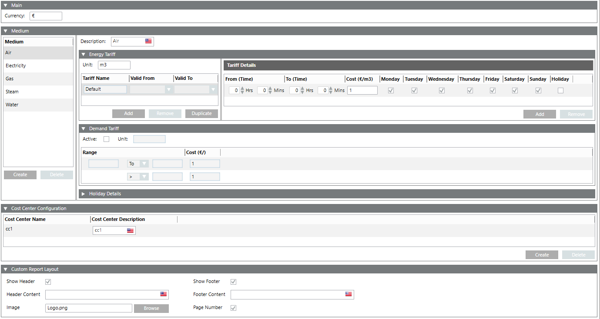
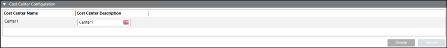
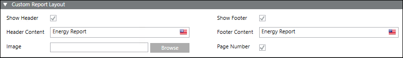

Powermanager Reports Workspace
The powermanager reports provide models of daily electricity usage so that you can distribute loads and avoid demand peaks. This enables you to allocate energy consumption and/or costs to individual areas and identify expensive processes that need attention. The reports feature compiles data from load circuits over a user-defined period. This enables the user to fully utilize the power distribution system and run at near rated tolerances.
In Engineering mode, you can work with powermanager reports using the Configuration tab.
The following expanders help you in configuring the reports:
Main Expander
This expander is applicable only to the Cost Center report. It allows you to specify the currency type.

Medium Expander
This expander is applicable only to the Cost Center report. It allows you to create a medium representing an energy source and define the energy and demand tariff details with the holiday details. It comprises of the following expanders:
- Medium: Allows you to create new mediums and delete existing mediums. The below mentioned mediums are created by default and cannot be deleted.
- Air
- Electricity
- Gas
- Steam
- Water
- Energy Tariff: Allows you to configure the energy tariff for a particular unit. You can also add a new tariff, remove an existing tariff, and create a duplicate entry for a tariff.
- Tariff Details: Allows you to specify the details for a tariff such as the time duration when it is applicable, applicable cost, and the days of the week when the tariff is applicable. You can also add new tariff details and remove existing tariff details using the Add and Remove buttons. For a given tariff, tariff details have to be configured in such a way that the multiple tariff settings add up to 24 hours for each day and all the days of the week are covered. The minimum tariff interval is 15 minutes. You can also add a holiday tariff by selecting the holiday check box for a particular date.
- Demand Tariff: Allows you to specify the details of the demand tariff. You can enable the demand tariff by selecting the Active check box. You can specify the details, such as the unit for the tariff, value range or cost corresponding to the range.
- Holiday Details: Allows you to specify a date which you want to be marked as a holiday. Additionally, you can mark the same day as a holiday every year by selecting the Every year check box. The holiday tariff configured in the Tariff Details expander is applied on this date. You can add a new holiday or remove an existing holiday by clicking Add or Remove.
Cost Center Configuration Expander
This expander is applicable only to the Cost Center report.
It allows you to create cost centers that are displayed when creating a Cost Center report in Operating mode.

- Create: Allows you to create a new cost center.
- Delete: Allows you to delete an existing cost center.
Custom Report Layout Expander
This expander is applicable to all report types. It allows you to configure the headers, footers, logo, and page numbers in a report.

- Show Header/Show Footer: (Default selection) Deselect the Show Header/Show Footer check box to remove the header/footer from the report.
Deselecting the Show Header check box also disables the image configuration parameter.
Deselecting the Show Footer check box disables the Page Number configuration. - Header Content: (Default selection) Enter the text to be displayed in the report header.
- Footer Content: (Default selection) Enter the text to be displayed in the report footer.
- Image: Click Browse: and select an image to be displayed in the header of the report.
- Page Number: (Default selection) Deselect the check box to not display the page numbers in the footer of the report.